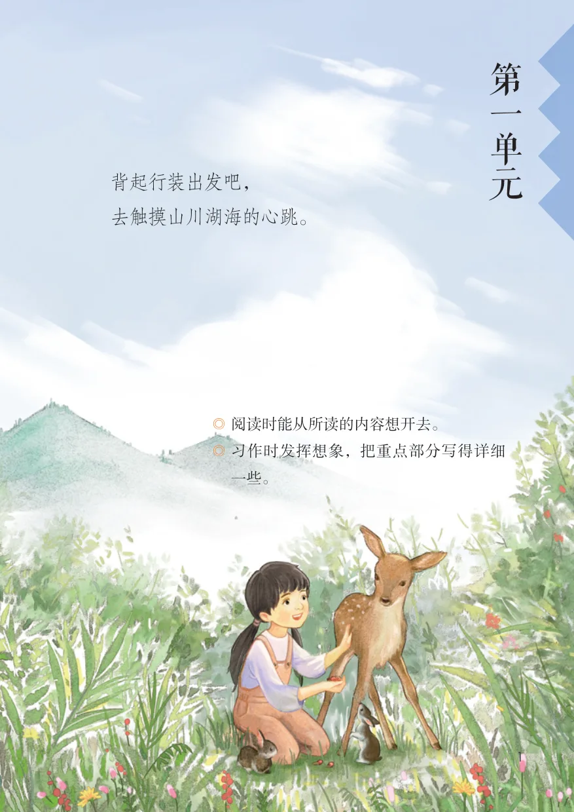
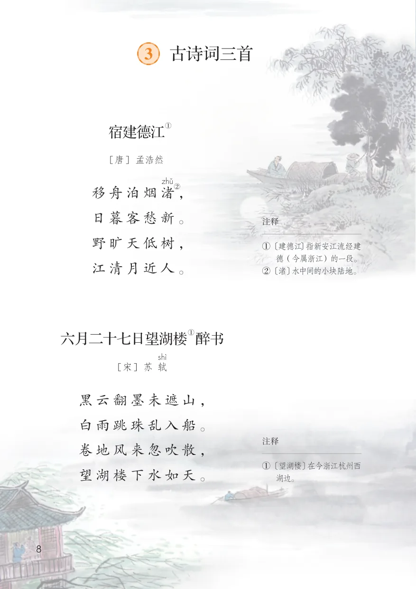
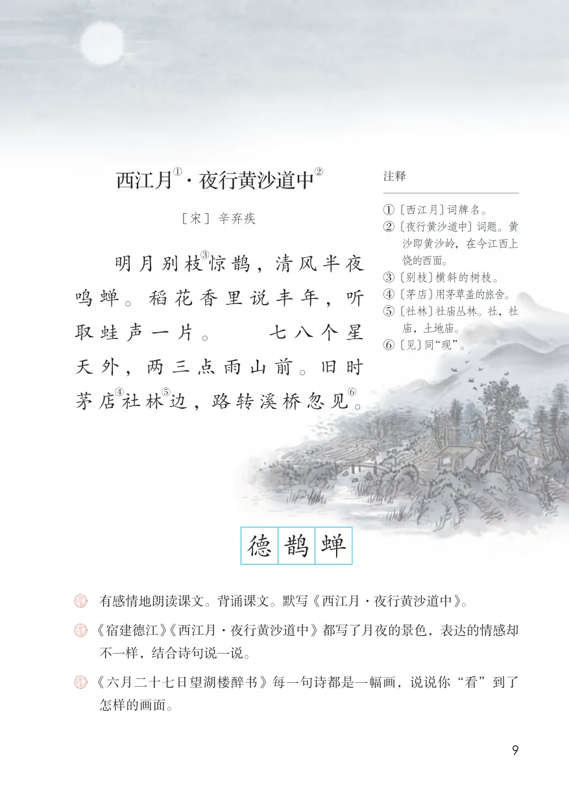
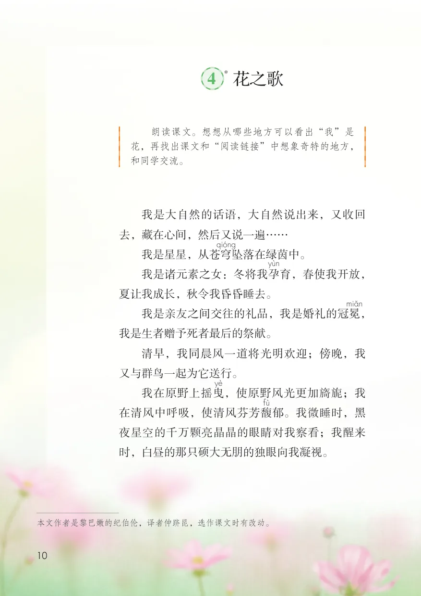
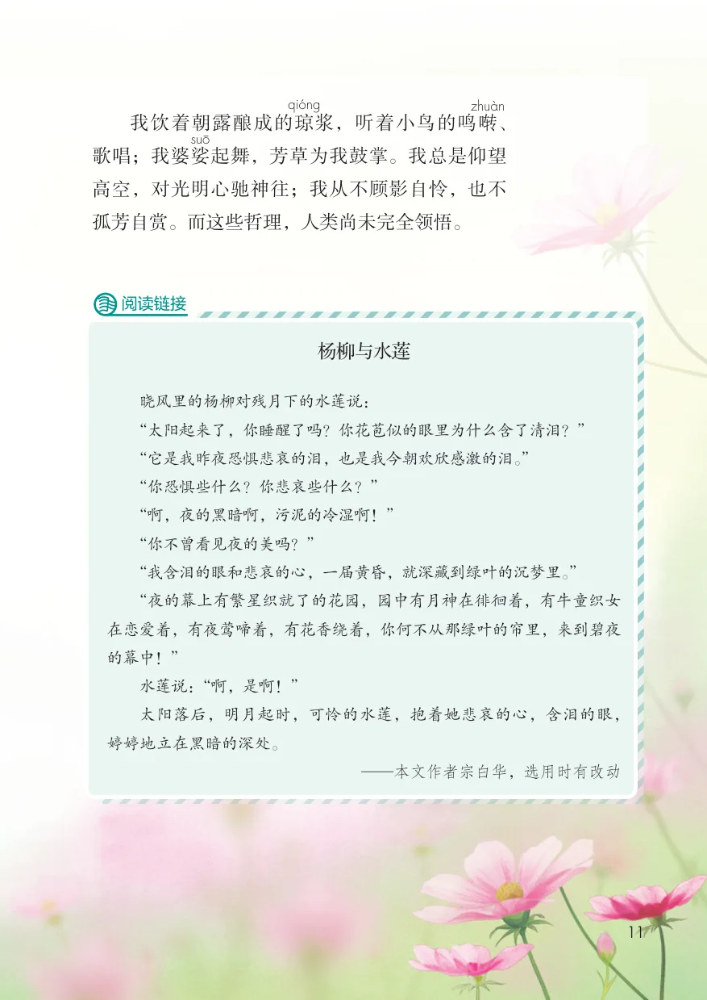
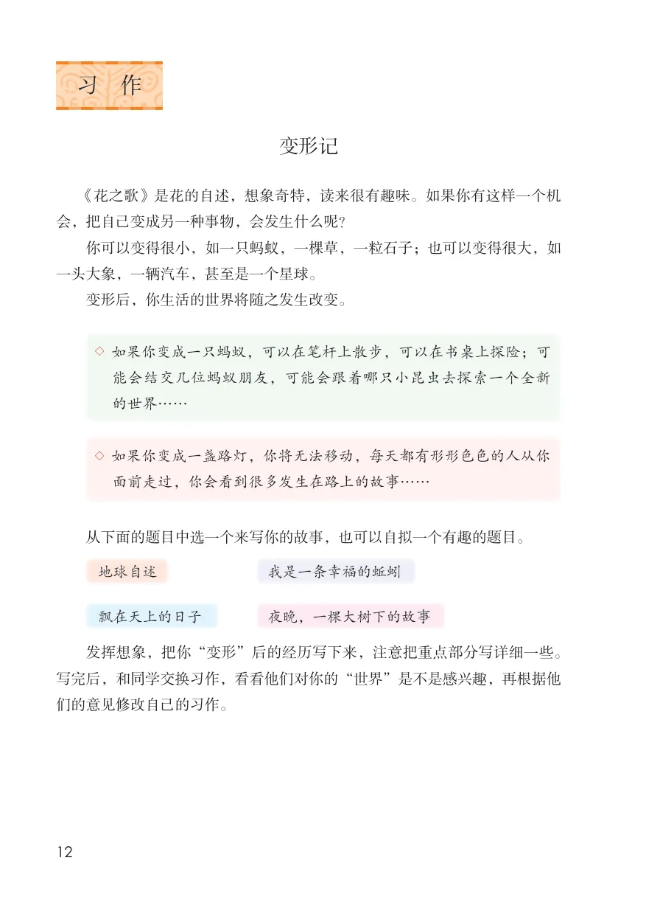
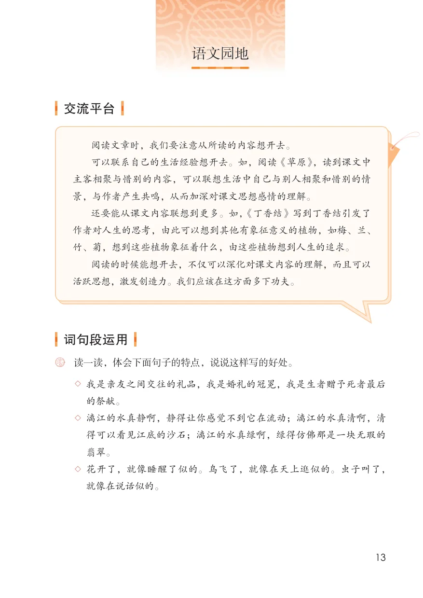
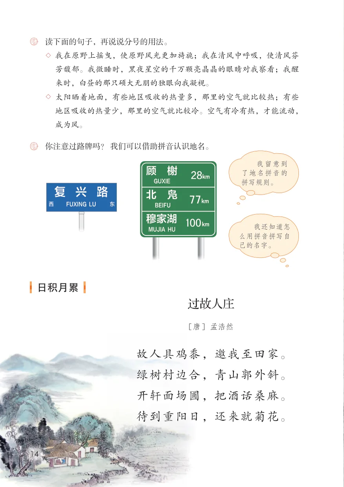

UNIT 01
第一单元
背起行装出发吧，去触摸山川湖海的心跳。
学习目标
- 阅读时能从所读的内容想开去。
- 习作时发挥想象，把重点部分写得详细一些。

单元导语 · 教材第 1 页
单元导语与学习目标
教材第 1 页
查看原页第
一
背起行装出发吧， 单
去触摸山川湖海的心跳。 元
◎ 阅读时能从所读的内容想开去。
◎ 习作时发挥想象，把重点部分写得详细
一些。
课文 · 教材第 2–4 页
1 草原
教材第 2 页
查看原页1草原
这次，我看到了草原。那里的天比别处的更可爱，空气是那么清鲜，天空是那么明朗，使我总想高歌一曲，表示我满心的愉快。
在天底下，一碧千里，而并不茫茫。四面都有小丘，平地是绿的，小丘也是绿的。羊群一会儿上了小丘，一会儿又下来，走在哪里都像给无边的绿毯绣上了白色的大花。那些小丘的线条是那么柔美，就像只用绿色渲染，不用墨线勾勒的中国画那样，到处翠色欲流，轻轻流入云际。这种境界，既使人惊叹，又叫人舒服，既愿久立四望，又想坐下低吟一首奇丽的小诗。在这境界里，连骏马和大牛都有时候静立不动，好像回味着草原的无限乐趣。
我们访问的是陈巴尔虎旗。汽车走了一百五十里，才到达目的地。一百五十里全是草原。再走一百五十里，也还是草原。草原上本文作者老舍，选作课文时有改动。
教材第 3 页
查看原页行车十分洒脱，只要方向不错，怎么走都可以。初入草原，听不见一点儿声音，也看不见什么东西，除了一些忽飞忽落的小鸟。走了许久，远远地望见了一条迂回的明如玻璃的带子——河！牛羊多起来，也看到了马群，隐隐有鞭子的轻响。快了，快到了。忽然，像被一阵风吹来似的，远处的小丘上出现了一群马，马上的男女老少穿着各色的衣裳，群马疾驰，襟飘带舞，像一条彩虹向我们飞过来。这是主人来到几十里外欢迎远客。见到我们，主人们立刻拨转
马头，欢呼着，飞驰着，在汽车左右与前面引路。静寂的草原热闹起来：欢呼声，车声，马蹄声，响成一片。车跟着马飞过小丘，看见了几座蒙古包。
蒙古包外，许多匹马，许多辆车。人很多，都是从几十里外乘马或坐车来看我们的。主人们下了马，我们下了车。也不知道是谁的手，总是热乎乎地握着，握住不放。大家的语言不同，心可是一样。你说你的，我说我的，总的意思是民族团结互助。
教材第 4 页
查看原页也不知怎的，就进了蒙古包。奶茶倒上了，奶豆腐摆上了，主客都盘腿坐下，谁都有礼貌，谁都又那么亲热，一点儿不拘束。
不大一会儿，好客的主人端进来大盘的手抓羊肉。干部向我们敬酒，七十岁的老翁向我们敬酒。我们回敬，主人再举杯，我们再回敬。这时候，鄂温克族姑娘们戴着尖尖的帽子，既大方，又稍有点儿羞涩，来给客人们唱民歌。我们同行的歌手也赶紧唱起来，歌声似乎比什么语言都更响亮，都更感人，不管唱的是什么，听者总会露出会心的微笑。
饭后，小伙子们表演套马、摔跤，姑娘们表演了民族舞蹈。客人们也舞的舞，唱的唱，还要骑一骑蒙古马。太阳已经偏西，谁也不肯走。是啊！蒙汉情深何忍别，天涯碧草话斜阳！
毯玻璃裳虹蹄腐稍微朗读课文，想象草原迷人的景色，读出自己的感受。背诵第1自然段。读下面的句子，回答括号里的问题。再从课文中找出其他类似的句子，读一读，抄写下来。
那些小丘的线条是那么柔美，就像只用绿色渲染，不用墨线勾勒的中国画那样，到处翠色欲流，轻轻流入云际。这种境界，既使人惊叹，又叫人舒服，既愿久立四望，又想坐下低吟一首奇丽的小诗。（哪句是直接写草原景色的？哪句写了作者的感受？在写景中融入感受有什么好处？）
“蒙汉情深何忍别，天涯碧草话斜阳”，你从课文哪些地方体会到了“蒙汉情深”？生活中你也有过与人惜别的经历吧，和同学交流。
课文 · 教材第 5–7 页
2 丁香结
教材第 5 页
查看原页2丁香结
今年的丁香花似乎开得格外茂盛，城里城外，都是一样。城里街旁，尘土纷嚣之间，忽然呈出两片雪白，顿使人眼前一亮，再仔细看，才知是两行丁香花。有的宅院里探出半树银妆，星星般的小花缀满枝头，从墙上窥着行人，惹得人走过了还要回头望。
城外校园里丁香更多。最好的是图书馆北面的丁香三角地，种有十数棵的白丁香和紫丁香。月光下白的潇洒，紫的朦胧。还有淡淡的幽雅的甜香，非桂非兰，在夜色中也能让人分辨出，这是丁香。
在我断断续续住了近三十年的斗室外，有三棵白丁香。每到春来，伏案时抬头便看见檐前积雪。雪色映进窗来，香气直透毫端。
人也似乎轻灵得多，不那么浑浊笨拙了。从外面回来时，最先映入眼帘的，也是那一片莹白，白下面透出参差的绿，然后才见那两扇红窗。我经历过的春光，几乎都是和这几树丁香联系在一起的。那十字小白花，那样小，却不显得单薄。许多小花形成一簇，许多簇花开满一树，遮掩着我的窗，照耀着我的文思和梦想。
古人诗云：“芭蕉不展丁香结”“丁香空结雨中愁”。在细雨迷蒙中，着了水滴的丁香格外妩媚。花墙边两株紫色的，如同印象派的画，线条模糊了，直向窗前的莹白渗过来。让人觉得，丁香确实该和微雨连在一起。
本文作者宗璞，选作课文时有改动。
教材第 6 页
查看原页只是赏过这么多年的丁香，却一直不解，何以古人发明了丁香结的说法。今年一次春雨，久立窗前，望着斜伸过来的丁香枝条上一柄花蕾。小小的花苞圆圆的，鼓鼓的，恰如衣襟上的盘花扣。我才恍然，果然是丁香结。
丁香结，这三个字给人许多想象。再联想到那些诗句，真觉得它们负担着解不开的愁怨了。每个人一辈子都有许多不顺心的事，一件完了一件又来。所以丁香结年年都有。结，是解不完的；人生中的问题也是解不完的，不然，岂不太平淡无味了吗？
缀窥幽雅案拙帘薄糊蕾恰襟恍怨
教材第 7 页
查看原页朗读课文。说说作者是从哪几个方面描写丁香的。读下面的句子，联系上下文回答括号里的问题。
◇ 每到春来，伏案时抬头便看见檐前积雪。雪色映进窗来，香气直透毫端。（这里的“积雪”指什么？你是从哪里看出来的？）
◇ 在细雨迷蒙中，着了水滴的丁香格外妩媚。花墙边两株紫色的，如同印象派的画，线条模糊了，直向窗前的莹白渗过来。让人觉得，丁香确实该和微雨连在一起。（雨中丁香具有怎样的特点？想象一下这幅画面。作者为什么说“丁香确实该和微雨连在一起”？）
丁香结引发了作者对人生怎样的思考？结合生活实际，谈谈你的理解。
阅读链接
芭蕉不展丁香结，同向春风各自愁。——李商隐《代赠》殷勤解却丁香结，纵放繁枝散诞春。——陆龟蒙《丁香》霜树尽空枝，肠断丁香结。
——冯延巳《醉花间》青鸟不传云外信，丁香空结雨中愁。——李璟《摊破浣溪沙》
诗词 · 教材第 8–9 页
3 古诗词三首
宿建德江 · 六月二十七日望湖楼醉书 · 西江月·夜行黄沙道中
3 古诗词三首
宿建德江 ①
[唐] 孟浩然
移舟泊烟渚②，
日暮客愁新。 注释
野旷天低树， ① 〔建德江〕指新安江流经建
德（今属浙江）的一段。
江清月近人。 ② 〔渚〕水中间的小块陆地。
六月二十七日望湖楼 ① 醉书
[宋] 苏轼
黑云翻墨未遮山，
白雨跳珠乱入船。
注释
卷地风来忽吹散，
① 〔望湖楼〕在今浙江杭州西
望湖楼下水如天。 湖边。
西江月①·夜行黄沙道中② 注释
① 〔西江月〕词牌名。
[宋] 辛弃疾
② 〔夜行黄沙道中〕词题。黄
沙即黄沙岭，在今江西上
饶的西面。 明月别枝惊鹊，清风半夜③
③ 〔别枝〕横斜的树枝。
鸣蝉。稻花香里说丰年，听 ④ 〔茅店〕用茅草盖的旅舍。
⑤ 〔社林〕社庙丛林。社，社
取蛙声一片。 七八个星庙，土地庙。
⑥ 〔见〕同“现”。
天外，两三点雨山前。旧时
④ ⑤ ⑥
茅店社林边，路转溪桥忽见。
德鹊蝉
有感情地朗读课文。背诵课文。默写《西江月·夜行黄沙道中》。
《宿建德江》《西江月·夜行黄沙道中》都写了月夜的景色，表达的情感却
不一样，结合诗句说一说。
《六月二十七日望湖楼醉书》每一句诗都是一幅画，说说你“看”到了
怎样的画面。
课文 · 教材第 10–11 页
4* 花之歌
略读课文
教材第 10 页
查看原页* 4 花之歌
朗读课文。想想从哪些地方可以看出“我”是
花，再找出课文和“阅读链接”中想象奇特的地方，
和同学交流。
我是大自然的话语，大自然说出来，又收回
去，藏在心间，然后又说一遍……
我是星星，从苍穹坠落在绿茵中。
我是诸元素之女：冬将我孕育，春使我开放，
夏让我成长，秋令我昏昏睡去。
我是亲友之间交往的礼品，我是婚礼的冠冕，
我是生者赠予死者最后的祭献。
清早，我同晨风一道将光明欢迎；傍晚，我
又与群鸟一起为它送行。
我在原野上摇曳，使原野风光更加旖旎；我
在清风中呼吸，使清风芬芳馥郁。我微睡时，黑
夜星空的千万颗亮晶晶的眼睛对我察看；我醒来
时，白昼的那只硕大无朋的独眼向我凝视。
本文作者是黎巴嫩的纪伯伦，译者仲跻昆，选作课文时有改动。
教材第 11 页
查看原页我饮着朝露酿成的琼浆，听着小鸟的鸣啭、歌唱；我婆娑起舞，芳草为我鼓掌。我总是仰望高空，对光明心驰神往；我从不顾影自怜，也不孤芳自赏。而这些哲理，人类尚未完全领悟。
阅读链接
杨柳与水莲晓风里的杨柳对残月下的水莲说：“太阳起来了，你睡醒了吗？你花苞似的眼里为什么含了清泪？”“它是我昨夜恐惧悲哀的泪，也是我今朝欢欣感激的泪。”
“你恐惧些什么？你悲哀些什么？”“啊，夜的黑暗啊，污泥的冷湿啊！”“你不曾看见夜的美吗？”“我含泪的眼和悲哀的心，一届黄昏，就深藏到绿叶的沉梦里。”
“夜的幕上有繁星织就了的花园，园中有月神在徘徊着，有牛童织女在恋爱着，有夜莺啼着，有花香绕着，你何不从那绿叶的帘里，来到碧夜的幕中！”
水莲说：“啊，是啊！”太阳落后，明月起时，可怜的水莲，抱着她悲哀的心，含泪的眼，婷婷地立在黑暗的深处。—本文作者宗白华，选用时有改动
习作 · 教材第 12 页
习作：变形记
教材第 12 页
查看原页习作
变形记《花之歌》是花的自述，想象奇特，读来很有趣味。如果你有这样一个机会，把自己变成另一种事物，会发生什么呢？
你可以变得很小，如一只蚂蚁，一棵草，一粒石子；也可以变得很大，如一头大象，一辆汽车，甚至是一个星球。变形后，你生活的世界将随之发生改变。
◇ 如果你变成一只蚂蚁，可以在笔杆上散步，可以在书桌上探险；可能会结交几位蚂蚁朋友，可能会跟着哪只小昆虫去探索一个全新的世界……
◇ 如果你变成一盏路灯，你将无法移动，每天都有形形色色的人从你面前走过，你会看到很多发生在路上的故事……从下面的题目中选一个来写你的故事，也可以自拟一个有趣的题目。
地球自述我是一条幸福的蚯蚓飘在天上的日子夜晚，一棵大树下的故事发挥想象，把你“变形”后的经历写下来，注意把重点部分写详细一些。
写完后，和同学交换习作，看看他们对你的“世界”是不是感兴趣，再根据他们的意见修改自己的习作。
语文园地 · 教材第 13–14 页
语文园地
语文园地
交流平台
阅读文章时，我们要注意从所读的内容想开去。可以联系自己的生活经验想开去。如，阅读《草原》，读到课文中主客相聚与惜别的内容，可以联想生活中自己与别人相聚和惜别的情景，与作者产生共鸣，从而加深对课文思想感情的理解。
还要能从课文内容联想到更多。如，《丁香结》写到丁香结引发了作者对人生的思考，由此可以想到其他有象征意义的植物，如梅、兰、竹、菊，想到这些植物象征着什么，由这些植物想到人生的追求。
阅读的时候能想开去，不仅可以深化对课文内容的理解，而且可以活跃思想，激发创造力。我们应该在这方面多下功夫。
词句段运用
读一读，体会下面句子的特点，说说这样写的好处。
◇ 我是亲友之间交往的礼品，我是婚礼的冠冕，我是生者赠予死者最后的祭献。
◇ 漓江的水真静啊，静得让你感觉不到它在流动；漓江的水真清啊，清得可以看见江底的沙石；漓江的水真绿啊，绿得仿佛那是一块无瑕的翡翠。
◇ 花开了，就像睡醒了似的。鸟飞了，就像在天上逛似的。虫子叫了，就像在说话似的。
教材第 14 页
查看原页读下面的句子，再说说分号的用法。
◇ 我在原野上摇曳，使原野风光更加旖旎；我在清风中呼吸，使清风芬
芳馥郁。我微睡时，黑夜星空的千万颗亮晶晶的眼睛对我察看；我醒
来时，白昼的那只硕大无朋的独眼向我凝视。
◇ 太阳晒着地面，有些地区吸收的热量多，那里的空气就比较热；有些
地区吸收的热量少，那里的空气就比较冷。空气有冷有热，才能流动，
成为风。
你注意过路牌吗？ 我们可以借助拼音认识地名。
我留意到
了地名拼音的
拼写规则。
我还知道怎
么用拼音拼写自
己的名字。
日积月累
过故人庄
[唐] 孟浩然
故人具鸡黍，邀我至田家。
绿树村边合，青山郭外斜。
开轩面场圃，把酒话桑麻。
待到重阳日，还来就菊花。
SOURCE PAGES
原书页面与插图
按课文和栏目分组，完整保留本单元全部原书页面。点击可查看大图。
单元导语与学习目标
1 草原
2 丁香结
3 古诗词三首


4* 花之歌


习作：变形记

语文园地

